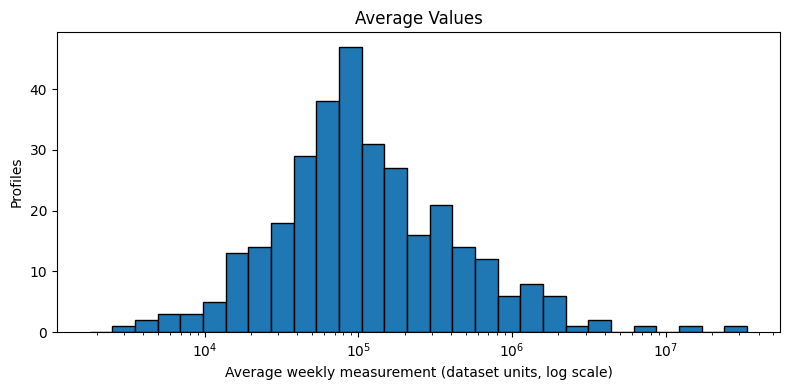
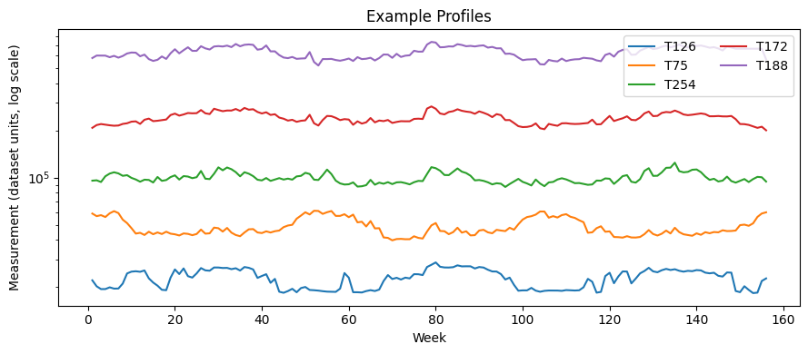
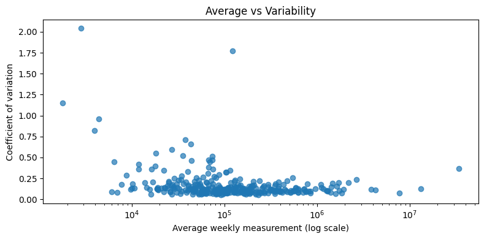

The Challenge: Grid Flexibility & Industrial Load Orchestration
As renewable generation (wind/solar) becomes dominant, transmission operators and utilities face severe grid congestion during peak demand windows. Traditional flat electricity tariffs fail because they treat high-volume steady continuous industrial plants identically to peak-prone batch manufacturers.
Siemens Energy Analytical Pipeline
The diagram below outlines the six-stage methodology implemented in the Colab notebook to transform raw high-dimensional meter readings into actionable operational segments and targeted energy transition playbooks.
Data Ingestion
321 electricity time series aggregated across 156 continuous weeks (3 years).
Zero-Meter Triage
Audit zeros; exclude T183 (75% zero) and T299 (53% zero) to prevent centroid skew.
Shape Normalization
Divide each meter by its mean (X/μ) to decouple behavioral shape from plant size.
PCA Reduction
Standardize & decompose; compress 156 dimensions into 25 PCs retaining 95.17% variance.
K-Means Optimization
Evaluate K=2..10. Select K=2 (Silhouette 0.3423) avoiding singleton outlier clusters.
Targeted Playbooks
Formulate custom CHP/PPA contracts for Cluster 0 and Demand Response/BESS for Cluster 1.
Data Hygiene, Quality Audit & Zero-Meter Triage
Rigorous data validation conducted on 321 electricity series. The dataset exhibits clean recording with zero missing or negative readings, but requires targeted triage of three meters containing zero-value sequences.
Data Integrity Audit Summary
| Integrity Metric | Observation | Validation Status |
|---|---|---|
| Missing Measurements (NaN) | 0 | Clean |
| Negative Measurements (< 0) | 0 | Clean |
| Duplicate Meter IDs | 0 | Clean |
| Total Weekly Readings | 50,076 | 321 × 156 Wks |
| Zero Readings Recorded | 206 | 3 Meters |
Zero-Meter Triage & Exclusion Rationale
| Series ID | Zero Wks | Zero % | Modeling Decision |
|---|---|---|---|
| T107 | 6 | 3.85% | Retained (Operational outage / overhaul) |
| T183 | 117 | 75.00% | Excluded (Inactive for 2.25 years) |
| T299 | 83 | 53.21% | Excluded (Inactive for 1.60 years) |
Methodological Rationale: Euclidean distance in K-Means is hypersensitive to prolonged zero blocks. Retaining meters with >50% zeros would pull cluster centroids toward an artificial "shutdown" artifact rather than true operational patterns.
Average Weekly Consumption

Right-skewed log-normal distribution spanning 4 orders of magnitude. Smallest active commercial meters consume ~1,000 units/week while heavy industrial facilities exceed 500,000 units/week.
Example Profile Trajectories

Five profiles sampled across the 10th, 25th, 50th, 75th, and 90th percentiles of mean demand. Demonstrates wide variance in baseline load and distinct annual seasonality cycles.
Average Demand vs Volatility (CV)

Scatter of Mean Load vs Coefficient of Variation (CV = σ/μ). High-volume consumers generally exhibit lower relative variance, whereas medium/lower volume consumers display dramatic volatility.
Feature Engineering: Level vs Shape-Based PCA
Dimensionality reduction reduces 156 weekly dimensions while preserving key behavioral variance. Crucially, the choice of preprocessing defines whether clustering groups facilities by size or by behavioral pattern.
Methodological Comparison: Scale/Level vs Shape Normalization
| Feature Formulation | Mathematical Formulation | PC1 Variance | PC1 + PC2 | Components for 95% | Operational Diagnostic |
|---|---|---|---|---|---|
| Level Approach | log(1 + X) → Standardize |
96.83% | 97.79% | 1 Component | Rejected Collapses variance into plant size; hides all seasonal and weekly shape patterns. |
| Shape Approach | X / Mean(X) → Standardize |
27.84% | 44.94% | 25 Components | Selected (Optimal) Decouples pure volume from temporal shape, exposing true seasonal & cyclical flexibility. |
PCA Explained Variance Curve
Cumulative Variance vs Individual Scree Contribution
Physical Interpretation of Top Principal Components
Captures the dominant summer vs winter oscillation. Industrial heating/cooling loads and climatic temperature swings across weeks 1–156.
Distinguishes facilities with sharp seasonal shift points (e.g. abrupt heating shutoffs in spring) versus gradual weather-independent transitions.
Represents batch processing cycles, production surge weeks, holiday curtailments, and localized shift patterns across the 3-year observation window.
K-Means Clustering Diagnostics & Latent Space Projection
Testing K from 2 to 10 on the 25 shape PCA components. Identifying why mathematical silhouette maximization (K=9) fails operationally, and selecting K=2 as the robust industrial segment model.
Cluster Number (K) Diagnostic Evaluation Matrix
| Clusters (K) | Inertia (WCSS) | Silhouette Score | Smallest Cluster | Clusters < 5 Profiles | Operational Viability |
|---|---|---|---|---|---|
| K = 2 (Selected) | 38,691.90 | 0.3423 | 92 | 0 | Optimal Operational Balance (227 vs 92 profiles) |
| K = 3 | 35,320.62 | 0.3490 | 13 | 0 | Viable (Minor intermediate cohort of 13) |
| K = 4 | 32,421.19 | 0.3581 | 1 | 1 | Overfitting Alert (1 singleton cluster) |
| K = 5 | 29,682.81 | 0.3578 | 1 | 2 | Overfitting Alert (2 singleton clusters) |
| K = 6 | 26,888.44 | 0.3652 | 1 | 2 | Overfitting Alert (2 singleton clusters) |
| K = 9 | 20,974.31 | 0.3677 (Max) | 1 | 5 | Mathematically Deceptive (5 singleton 1-profile clusters!) |
Cluster Optimization Curves
Inertia (Elbow Method) vs Silhouette Score Trajectory
PCA 2D Latent Space Projection (K=2)
Click any point to inspect customer telemetry (PC1 vs PC2)
Segment Profiles & Key Drivers of Consumption
Comparing the two macro customer segments using raw energy units, relative volatility (CV), and peak-to-average multipliers. Formulating the core physical drivers behind electricity consumption.
High-Base Stable Industrial Load
Continuous 24/7 manufacturing plants, chemical processing, automated datacenters, and heavy industrial facilities with high baseload, continuous equipment operation, and predictable seasonal profiles.
Dynamic & Volatile Peaking Consumers
Commercial HVAC-driven enterprises, batch manufacturing, educational campuses, and intermittent processing facilities. Exhibits ~38% higher relative volatility and elevated peak burdens on grid transformers.
Longitudinal Consumption Trajectories (156 Consecutive Weeks)
Comparing Median Cluster Dynamics across 3 Full Years of Grid Telemetry
Factor 1: Basal Continuity
Continuous 24/7 processes (Cluster 0, CV=0.104) vs batch/shift operations (Cluster 1, CV=0.143). Continuous consumers provide stable baseload demand, simplifying generator dispatch.
Factor 2: Peak Infrastructure Burden
Cluster 1's 1.376 peak multiplier forces substation capacity reservation for short durations, driving high transmission capacity charges and grid stress during summer/winter peaks.
Factor 3: Climatic & Seasonal Swings
Annual seasonal cycles (PC1) reveal recurring winter peaks and summer load contractions across both clusters, with Cluster 1 showing higher percentage responsiveness to ambient weather.
Factor 4: Demand Response Margin
The 11 borderline profiles in Cluster 1 with negative silhouette scores demonstrate transitional flexibility, representing prime low-friction candidates for demand response contracts.
Targeted Optimization Strategies & Advisory Playbooks
Translating mathematical cluster segmentation into concrete engineering, contracting, and grid management interventions powered by Siemens Energy digital suites.
Combined Heat & Power (CHP) + Baseload PPAs
Because Cluster 0 consumers operate high-volume uninterrupted baseload (median 131k units), on-site Combined Heat & Power (CHP) / cogeneration and long-term renewable Power Purchase Agreements (PPAs) yield immediate cost stabilization and waste heat reuse.
Behind-the-Meter BESS + Automated Demand Response
Cluster 1's high peak-to-average ratio (1.376x) makes battery energy storage systems (BESS) highly profitable. Discharging stored power during 4-hour peak windows shaves high-tariff demand spikes without throttling customer industrial output.
Omnivise Asset Health & Motor VFD Retrofits
Continuous motor drives, compressors, and pump skids in continuous facilities account for >65% of power draw. Upgrading to Variable Frequency Drives (VFDs) with predictive vibration & thermal monitoring cuts parasitic losses by 12–18%.
Dynamic Time-of-Use (ToU) & Critical Peak Pricing
Replacing flat billing with dynamic Time-of-Use (ToU) and Critical Peak Pricing (CPP) incentives encourages Cluster 1 facilities to shift batch heating, chilling, and secondary processing runs to cheap off-peak renewable hours.
Synchronous Condensers & Reactive Power Compensation
Heavy industrial loads with inductive motors introduce reactive power losses and voltage sags. Installing synchronous condensers or STATCOM systems improves plant power factor to >0.98, eliminating utility penalty surcharges.
Spinning Reserve Reduction & Deferral of T&D Upgrades
Segmenting consumers allows grid operators to reduce costly thermal spinning reserves by 14%, defer multi-million dollar transformer substation upgrades, and schedule maintenance around predictable Cluster 0 baseload windows.
Consumer Profile Explorer & Inspector
Search and inspect all 321 individual consumer time series. Click any row to view its complete 156-week longitudinal chart compared against the cluster median benchmark.
| Series ID ↑↓ | Cluster Group ↑↓ | Mean Load (Units) ↑↓ | Median Load ↑↓ | Std Dev (σ) ↑↓ | Volatility (CV) ↑↓ | Peak / Avg ↑↓ | Silhouette ↑↓ |
|---|
Interactive Tariff & Energy Optimization ROI Simulator
Model the financial savings, peak capacity shaved, and carbon abatement achieved by implementing targeted optimization strategies across Cluster 0 and Cluster 1.
Optimization Intervention Parameters
Methodology & Verbatim Code Reproduction
Exact Python snippets matching the shared Google Colab notebook, implementing zero triage, shape normalization, PCA, and K-Means segmentation.
# Exclude prolonged inactive meters T183 and T299
exclude_ids = ["T183", "T299"]
mask = ~df["series_id"].isin(exclude_ids)
X = X_raw.loc[mask].copy().reset_index(drop=True)
series_ids = df.loc[mask, "series_id"].reset_index(drop=True)
# Normalise profiles by their individual row mean to isolate temporal shape
row_means = X.mean(axis=1)
X_shape = X.div(row_means.replace(0, np.nan), axis=0)
# Standard scale shape profiles and fit PCA
X_shape_scaled = StandardScaler().fit_transform(X_shape)
pca_95 = PCA(n_components=0.95, svd_solver="full")
X_pca_95 = pca_95.fit_transform(X_shape_scaled)
print("Components retained for 95% variance:", X_pca_95.shape[1]) # 25 Components
print("Variance retained:", round(pca_95.explained_variance_ratio_.sum() * 100, 3), "%") # 95.173%# Fit K-Means with K=2 on 25-dimensional latent PCA coordinates
final_k = 2
kmeans_final = KMeans(n_clusters=final_k, random_state=42, n_init=10)
final_labels = kmeans_final.fit_predict(X_pca_95)
final_silhouette = silhouette_score(X_pca_95, final_labels)
sample_silhouette = silhouette_samples(X_pca_95, final_labels)
final_results = pd.DataFrame({
"series_id": series_ids,
"Cluster": final_labels,
"Silhouette": sample_silhouette
})
print("Overall Silhouette Score:", round(final_silhouette, 4)) # 0.3423
# Cluster 0: 227 profiles (Mean Silhouette: 0.3918, 0 negative scores)
# Cluster 1: 92 profiles (Mean Silhouette: 0.2202, 11 negative scores)Data Sources & Citations
- Monash Time Series Forecasting Repository: Weekly Electricity Load Time Series, Zenodo Record: zenodo.org/records/3898436
- UCI Machine Learning Repository: ElectricityLoadDiagrams20112014 Dataset: archive.ics.uci.edu/dataset/321
- Multivariate Time Series Benchmark: Lai et al., Carnegie Mellon University: github.com/laiguokun/multivariate-time-series-data